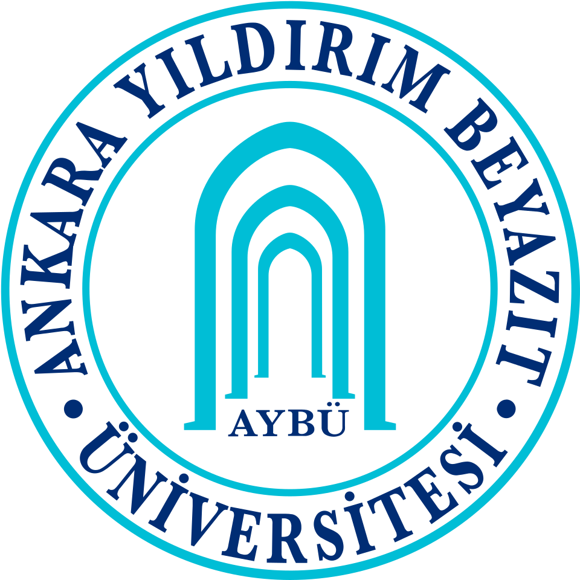

Atatürk Üniversitesi
Atatürk Üniversitesi
Beden Eğitimi ve Spor
Tez Danışmanı: Prof. Dr. Necip Fazıl KİSHALI

Araştırma Görevlisi
Erzurum Teknik Üniversitesi
Spor Bilimleri Fakültesi
Antrenörlük Eğitimi Bölümü
Eğitim Bilgileri
Beden Eğitimi ve Spor
Training and Movement Sciences

Ankara Yıldırım Beyazıt ÜniversitesiBeden Eğitimi ve Spor
Egzersiz ve Spor Bilimleri